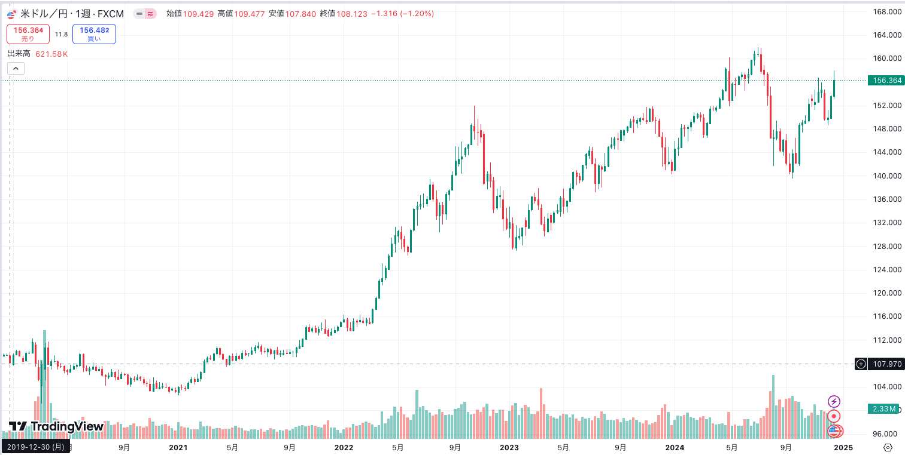

マカパカブログ 第0章
初めましてとこんにちは
続きを読むこんにちは、マカパカブログの筆者のマカパカです。
前回がマカパカブログ0章という名の自己紹介だったため本編はここからです。
さて、今回はタイトル通りみんな大好きお金のお話です。
ドル資産を得ろ！！！これは現代とその先を生き抜くために必要な手段です。
日本人の金融リテラシーは低い！とよく言われます。私自身もこれを実感することがありますし、過去の自分なんかがまさにそうでした。
「円安？円の数値が大きいと円安なんだよね？」みたいな。。。学生の頃の社会科の授業で習い、それ以上でも以下でもない知識です。
言葉の意味をわかった気でいて実態を理解していませんでした。そんな自分も今ではベラベラと他人に金融知識をひけらかすくらいになりました。
そうです、2024年。めちゃくちゃ勉強しました。新NISAなんかが流行り、投資ブーム真っ只中でみなさんこういう話、好きなのではないでしょうか。
そして今回は金融のお勉強講座ではないので詳しい話は割愛して、ドル資産の重要性について話します。
まずドル資産とは何か。
アメリカドル(USD)建てで取引される資産のことです。
今回はそれらを保有して世界的なインフレ、歴史的な円安に対抗する、というお話です。
最近物の値段が上がっていませんか？これの原因は上述した世界的なインフレ、歴史的な円安の影響です。
「円安」とは外貨(海外の通貨)に対して日本円の価値が下がることです。これは日本円が安くなることを意味します。
わかりますか？円安の場合はたくさんの円で少しのドルとしか交換できないのです。そして円高はその逆です。
1ドル100円だと100000円で1000ドル買えますが、1ドル200円だと100000円で500ドルしか買えません。
では実際どれくらいの円安が今起きているのでしょうか？
2024年12月現在、1ドルは150円を上回っています。4年前の2020年の100ドルと比べると50%も対ドルで円の価値が減っています。
簡単な話、アメリカ人は日本に来た場合に2020年と比較すると現在全員のお金が1.5倍になります。そりゃあ外国人観光客が殺到するわけです。
これが為替というものです。日本は島国で隣接する国がないので他国と比べあまり為替を意識する機会は少ないかもしれません
ただ、多くの日本の皆さんはiphoneを使ってますよね？これはアメリカの会社が作っている製品です。そのため、アメリカドル建てで取引されています。
言ってしまえばドル資産です。iphoneが日本人にとって高くなっているのは円安の影響です。
高え高え言われていますがドル建てだと無印モデルは何年も値上げをしていないみたく、アメリカ人からすれば値段は変わっていないみたいですね。
